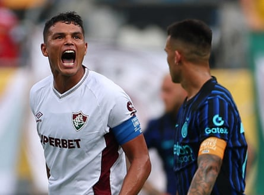

The Brazilian side Fluminense stunned Inter by knocking the Champions League finalists out of the Club World Cup with a 2-0 victory in the last 16 in Charlotte.
The reign of the new head coach, Cristian Chivu, who took over following Simone Inzaghi’s departure just days after that humbling 5-0 defeat against Paris Saint-Germain a month ago , has not started well as they exited the tournament before the quarter-finals.
Goals from Germán Cano, after just three minutes, and Hércules in the third added minute at the end of the game sealed the Serie A side’s fate.
In the quarter-finals, Fluminense will face either Manchester City or Al Hilal, who were due to play each other later on Monday. If City are their opponents, it would be a rematch of the 2023 Club World Cup final , which City won 4-0 in Saudi Arabia.
The match was played in front of a crowd of just 20,030 in the final game at the 74,867-capacity Bank of America Stadium in Charlotte. Two of the other three games at the stadium have also gone ahead with more than 40,000 empty seats.
Fluminense’s 44-year-old goalkeeper Fábio made four saves to seal one of the most famous wins in the Rio de Janeiro club’s history, with the 40-year-old former Chelsea centre-half Thiago Silva also producing a fine performance at the back. The result ensured there will be two Brazilian quarter-finalists in the first edition of this expanded tournament, with Palmeiras already having won through to face Chelsea in the last eight.
Fluminense were the better side for the opening hour of another sweltering last-16 encounter, then suffered through increased Inter pressure for the final 20 minutes to keep their third clean sheet of the tournament.
Lautaro Martínez came closest to pulling Inter level, forcing Fábio into saves in the 80th and 82nd minute, then striking the upright with another low effort only seconds later.
Thiago Silva celebrates after Hércules scored Fluminense’s second goal as Inter’s Lautaro Martinez looks on.Photograph: Agustín Marcarian/Reuters
In the 93rd minute, Inter’s at times shaky defence was exposed for a second time. Hércules found himself free at the edge of the 18-yard box following a throw-in, and drove a composed, low finish into the bottom right corner, sending most of the crowd into delirium.
Cano had put the Brazilians in front in just the third minute during a shaky start from Inter. Jhon Arias’s cross from the right took a deflection that caused defenders and the goalkeeper Yann Sommer to hesitate. Cano reacted superbly, continuing his run to meet the ball and angling his header from close range downward and through Sommer’s legs.
Fluminense nearly doubled the lead in the 30th minute, when Sommer gave up a rebound from Arias’s initial shot and Samuel Xavier fired his attempt narrowly wide of the far-left post. And in the 39th minute, Ignacio thought he had scored, only to be ruled fractionally offside by the automated review system.
The pattern of more Inter possession but more dangerous Fluminense chances continued early in the second half, and Sommer reacted superbly in the 62nd minute to dive and push Arias’s effort from beyond the penalty area just around his left post.
After the game Martínez was critical of Inter’s performance. “I gave everything on the pitch, in every training session, and I’m really sorry,” he said on Dazn. “I don’t want to lose, and I feel bad for the team. But I want to say one thing: you have to want to stay at Inter. We’re fighting for important goals, and whoever wants to stay here needs to show it. Whoever doesn’t, should leave.
“We’re here to do everything we can for Inter, and I’ve seen a lot of things that, as captain, I didn’t like. I want to fight for our objectives because we’re part of a great club, and I want to keep competing at the top.”